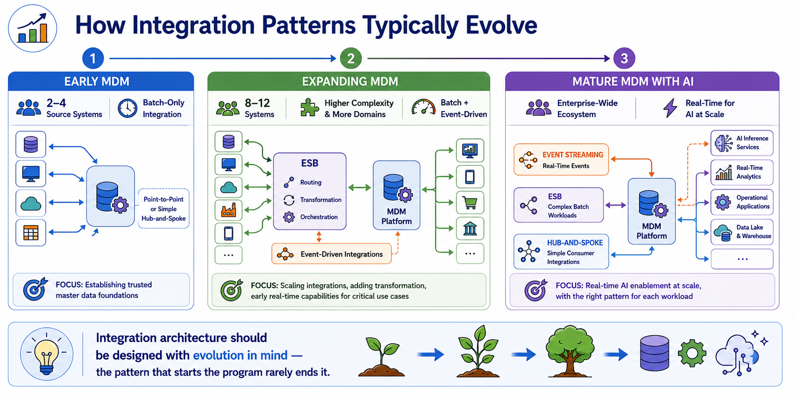
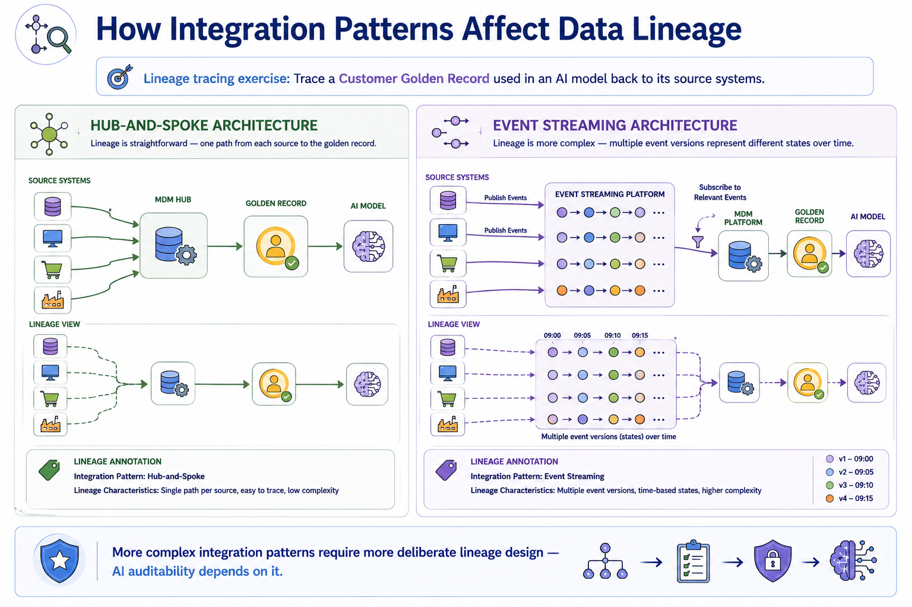
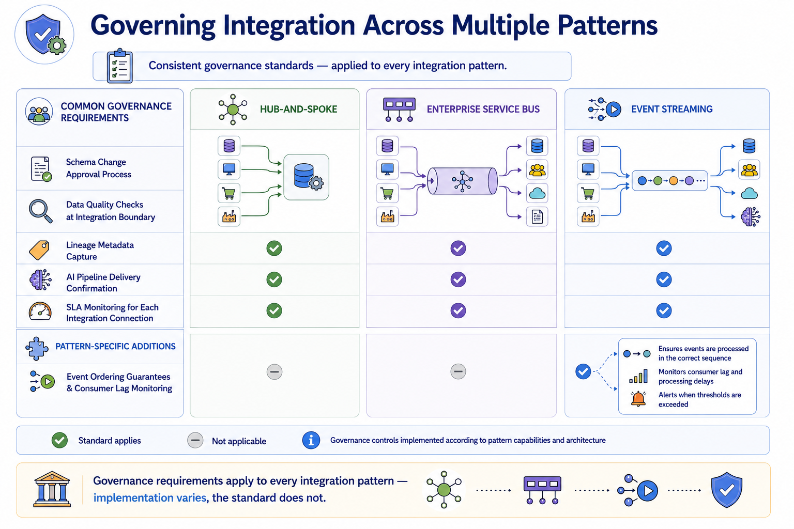
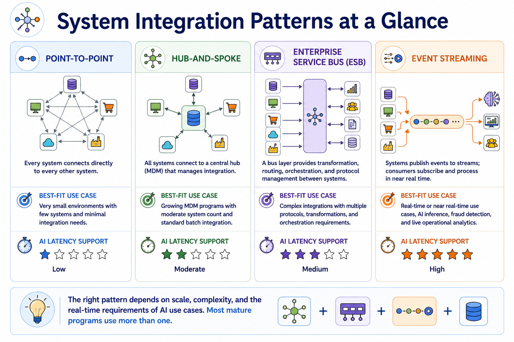

System Integration Patterns
Module support notes
Integration Pattern Evolution in MDM Programs
Integration architecture in MDM programs almost always evolves over time, and programs that design their initial integration architecture without considering where it needs to go tend to face costly re-architecture as the program scales. A common pattern is to start with hub-and-spoke for simplicity and governance consistency, introduce an ESB layer as transformation complexity grows, and add event streaming capability when real-time AI use cases emerge.
Organizations that anticipate this evolution and select integration middleware that supports multiple patterns from a single platform — rather than deploying separate tools for each pattern type — significantly reduce the re-architecture burden as they mature.
- Early MDM — two to four source systems, point-to-point or simple hub-and-spoke, batch-only integration
- Expanding MDM — eight to twelve systems, ESB adopted for transformation complexity, first event-driven integrations for critical real-time use cases
- Mature MDM with AI — full event streaming for AI inference use cases, ESB retained for complex batch workloads, hub-and-spoke for simpler consumer integrations
Tip
Design integration architecture with evolution in mind — the pattern that starts the program rarely ends it. When selecting integration middleware, evaluate whether the platform supports hub-and-spoke, ESB, and event streaming from a single toolset, so the transition between patterns as the program matures is a configuration change rather than a platform replacement.

Integration Patterns and Data Lineage
Data lineage — the ability to trace a golden record's field values back to their source records and the integration events that produced them — is significantly affected by integration pattern choice. Hub-and-spoke architectures produce relatively straightforward lineage because data flows through a single, centrally managed path. Event streaming architectures produce more complex lineage because the same entity may appear in multiple event versions in the stream, each representing a different point-in-time state.
AI audit requirements — particularly the need to explain which training data a model was built on and trace model outputs back to specific data inputs — require lineage design that accounts for the integration pattern's complexity.
Note
More complex integration patterns require more deliberate lineage design — AI auditability depends on it. An event streaming architecture that lacks explicit lineage annotation at each event boundary makes it extremely difficult to reconstruct which version of a source record contributed to a specific golden record at training time — which is exactly the information AI audit requirements ask for.

Integration Governance Across Patterns
When organizations run multiple integration patterns simultaneously — as most mature MDM programs do — a common governance failure is applying different standards to different patterns. Batch integrations get rigorous quality checks; event streaming integrations are treated as infrastructure and miss the same governance oversight.
Establishing a consistent integration governance standard that applies regardless of pattern — with pattern-specific implementation details where necessary — prevents the gaps that allow ungoverned data to reach AI systems through a pathway that was overlooked in the governance design.
Warning
Governance requirements apply to every integration pattern — implementation varies, the standard does not. Every integration connection, regardless of pattern, requires a schema change approval process, data quality checks at the integration boundary, lineage metadata capture, AI pipeline delivery confirmation, and SLA monitoring. Event streaming adds event ordering guarantees and consumer lag monitoring on top of these baseline requirements.

Most mature MDM programs run more than one integration pattern simultaneously — the right mix depends on scale, complexity, and the real-time requirements of AI use cases.
